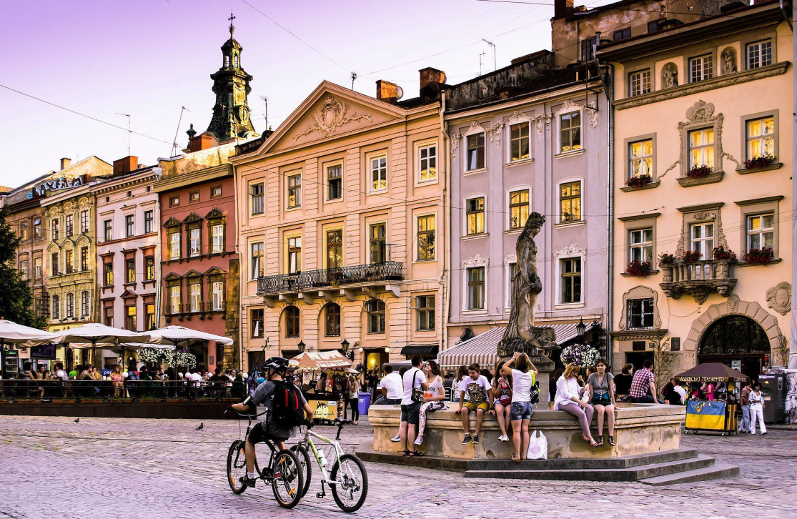
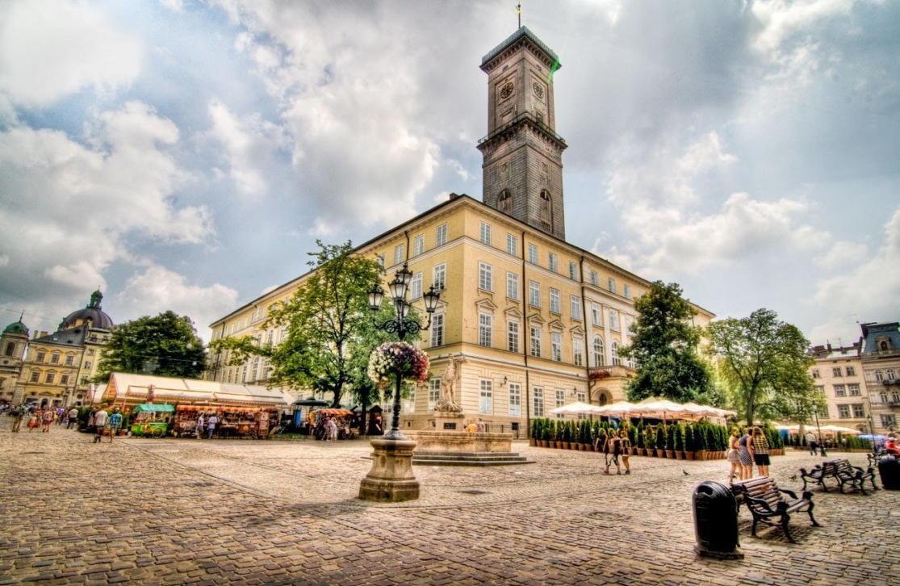
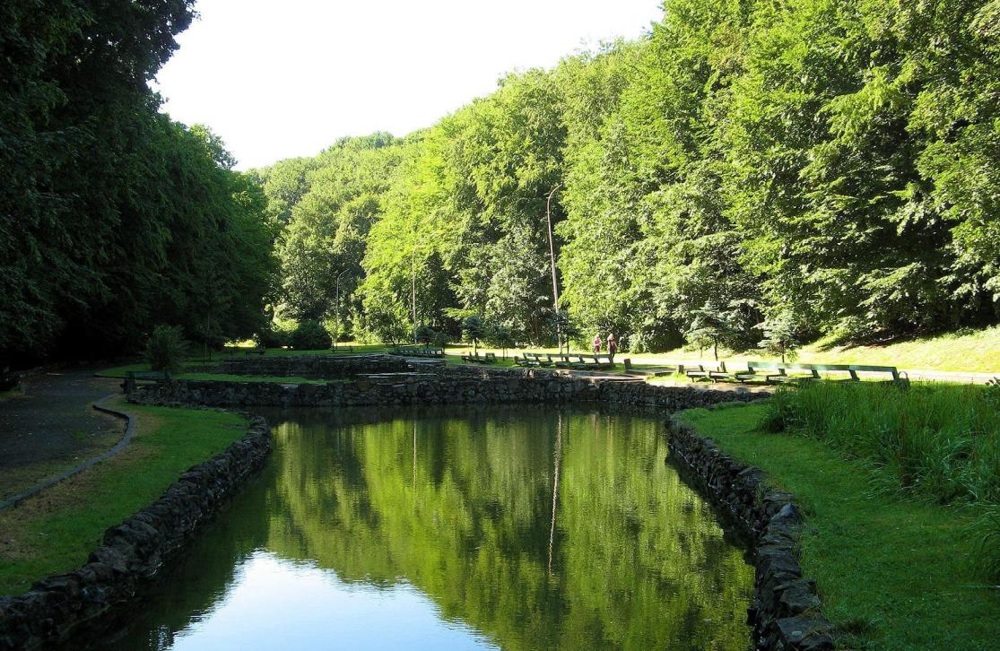

Київ

Площа Ринок
Уже цілих п'ять століть Площа Ринок у Львові є центром культурного, соціального та торговельного життя. Тут витає дух середньовіччя, а площа вражає витонченістю, самобутністю і розкішшю.
Архітектурні особливості серця Львова закладалися в XIV ст., будучи відображенням старовинних міст Європи. На площі лежить середньовічна бруківка, а античні скульптури надають цьому місцю особливого шарму. Навколо площі розташовані 44 будинки (кам'яниці), а в різні сторони ведуть вісім вулиць. Примітно, що будувалися будинки в різний час і в різних архітектурних стилях (бароко, ампір і ренесанс). На фасадах багатьох будівель збереглися приклади елементів архітектури XV-XVI ст. в готичному стилі. У будинках знаходяться музеї, кафе, за столиками яких можна випити чашечку смачного львівської кави прямо на вулиці, а також магазини, сувенірні лавки. Наприклад, Львівський історичний музей розташований в «Чорній кам'яниці», «Королівської кам'яниці» і інших будівлях, що знаходяться поруч. На Площі Ринок завжди багатолюдно, особливо коли влаштовуються різні фестивалі і свята. І не дивуйтеся, почувши тут прекрасну музику Штрауса або пропозицію навчитися танцювати латинську сальсу!

Ратуша
Ратуша з вежею заввишки 65 м знаходиться на Площі Ринок. Побудована вона була в ХІV ст.
Ратуша стала свідком багатьох подій з історії Львова. На башті розташовані найдавніший годинник в Україні, зроблені в 1852 році, а рівно о полудні тут чується гімн міста. Сурмач грає у будні о 12:00 та 16:00, у вихідні дні – щогодини з 9:00 до 21:00.
Львівську Ратушу звели після того, як місто отримало Магдебурзьке право в 1357 році. Спочатку Ратуша була зроблена з дерева і в 1381 році, на жаль, згоріла. Влада міста вирішила побудувати будівлю з каменю, і до кінця середніх століть це вже був цілий комплекс споруд. Вежа в нинішньому вигляді була закінчена в 1835-м в дусі віденського класицизму. Ратуша чотириповерхова, зроблена з цегли, біля неї знаходиться маленький дворик. Комплекс завершує вежа, на якій розташований годинник.

Парк «Погулянка»
Територія парку має площу 100 га, а більшість дерев тут – бук. У XVII ст. на цьому місці розташовувалася пасіка Яна Аттельмаера, бургомістра Львова.
У 1810-му адвокат Францішек Венглинський купив тут шматок території і збудував садибу, давши їй назву «Прогулянка». Господар створив ставок, висадив дерева і до нього в гості стали приїжджати львівські письменники, музиканти та інші представники місцевого вищого світу.
Пізніше, в 1821 році, ресторатор Ян Дістль придбав землі Венглінського і організував тут пивний шинок, а на озері тепер можна було поплавати на човнах. «Прогулянка» перетворилася в улюблене місце відпочинку жителів міста. У 1848-му парк став власністю Яна Клейна, який демонтував застарілі споруди і наполовину висушив водойму, вибудував садибу, пивоварню і фабрику з виготовлення цегли. Пінний напій, зварений в «Прогулянці», городяни називали найкращим у Львові. З 1853 року в парку відкрилася кондитерська з різними видами морозива.